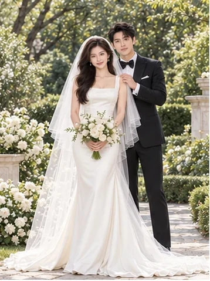
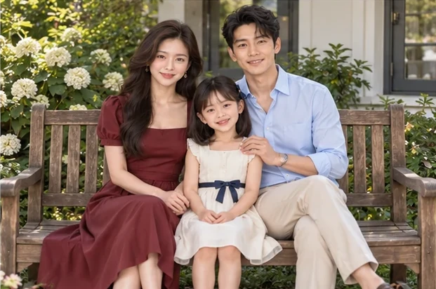
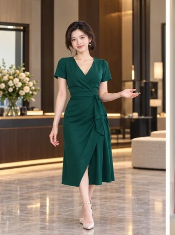
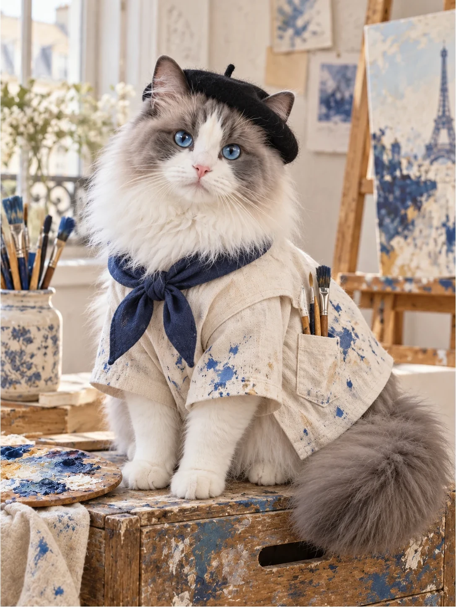
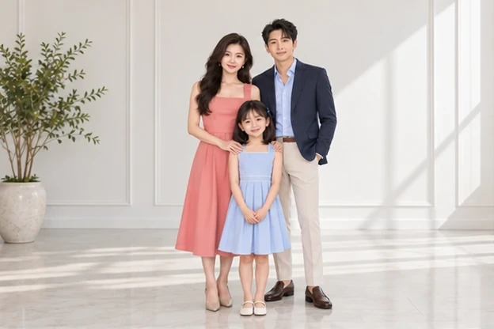
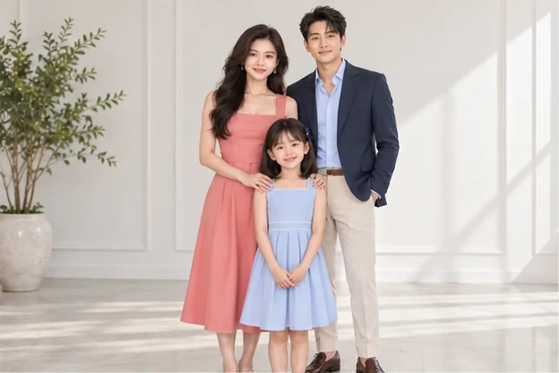

变换场景，也要认得出同一个人。
面容与体型分别对照原素材，后续生成图不替代人物参考。画幅正确，也要继续检查身形。
AGENT SKILL / 影像工坊
从人物参考到选片预览，把场景、造型与互动组织成一套摄影方案。为影楼与摄影团队，保留创作中的方向感。
人物摄影 · 场景设计 · 选片与返修




已确认作品的预览节选 · AI 合成素材
SELECTED STORIES / 四种摄影表达
围绕人物与用途设计画面，让服装、动作、场景和光线一起成立。点击主题，查看参考素材和完整预览。
THE CHALLENGE / 从好看走向可用
这个项目来自持续的生成、选片和返修实践。
面容与体型分别对照原素材，后续生成图不替代人物参考。画幅正确，也要继续检查身形。
从人物关系和使用场景出发，同时安排动作、服装与环境，避免一套姿势反复出现。
先锁定用户认可的内容，再处理具体问题。轻微审美差异交给选片，明确缺陷才定向补救。
THE WORKFLOW / 从素材到交付
每个阶段都有清楚的结果，避免在方向未确定前反复制作。
确定入镜成员、人物长相与自然体型，明确照片用途。
一次比较场景、穿搭与互动。全家福六格，其他创意主题可用九格。
确认并提出制作要求后，按所选方案生成独立成片，继续对照原素材。
只调整指定部分，检查人物、构图和文件规格，保留已经认可的内容。
A REAL REVISION / 一次具体返修
从实际测试中的裁脚问题，观察一次取景调整。


同一组真实测试输出对比，仅调整左上格取景。
EXPLORE THE STUDIO
进入演示，切换四种主题，查看原始素材、完整预览与局部细节。